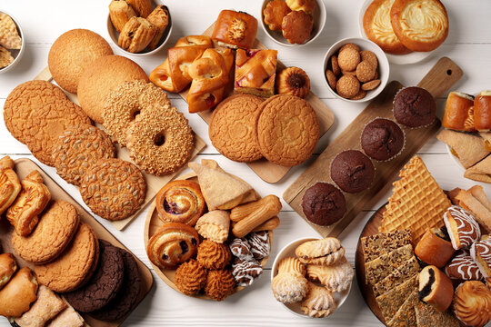

BAKING CAN BE SO FUN!!
My favorite baking store

I do prefer a Bosch Mixer over a Kitchen Aid. It's all about preference of what matters to you when choosing a mixer. I like Bosch Mixers because they tend to weigh less and are easier to pore ingredients into the mixing bowl. Kithen Aids are extremely heavy and I don't need it on my countertop as an asthetic of decor.
Orson Gygi